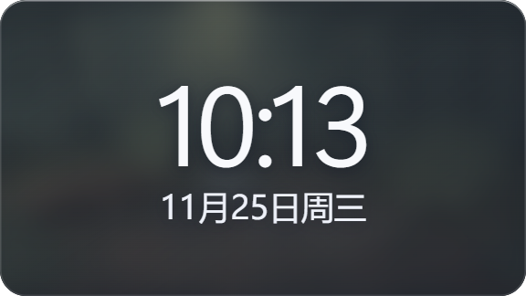

洁净启动／默认桌面组件 · 桌面生态画面组件 · 生态闲置后的时钟覆盖 · 面板透明边界与任务栏状态
打开原始 PNG采集记录
Windows 原生应用 WebView2 客户区 PNG
原图 576 × 324 px · 客户区 384 × 216 CSS px · DPR 1.5
世界刻度 2028
未经保存资料的新启动直接进入组件，无引导或首页。采集时已到闲置覆盖。
运行发行版首次启动
本轮在 Windows 应用中采到「新资料启动后的默认闲置」、「自动闲置覆盖」。可在采集记录核对进入方式、实际动作与方法。
启动默认显示，或托盘→显示组件面板
本轮在 Windows 应用中采到「新资料启动后的默认闲置」、「键盘聚焦恢复生态画面」、「编辑器保持浅塘，面板绑定林下且覆盖完全消失」、「自动闲置覆盖」。可在采集记录核对进入方式、实际动作与方法。
组件设置选时钟→离开生态场景或失焦
显示组件面板并观察 Windows 桌面、任务栏
完整窗口记录与 WebView 场景图分开。单独窗口画面无法证明透明区输入穿透、任务栏可见性或固定置顶。